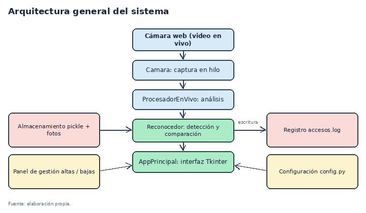
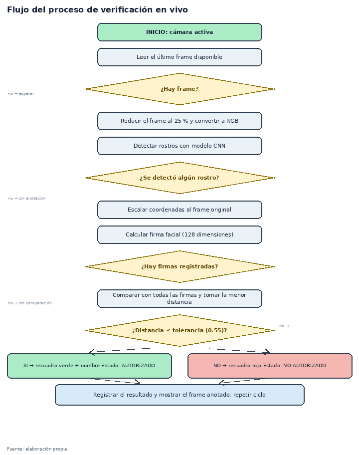
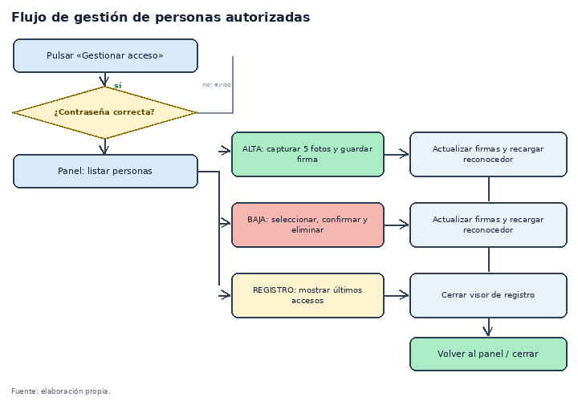
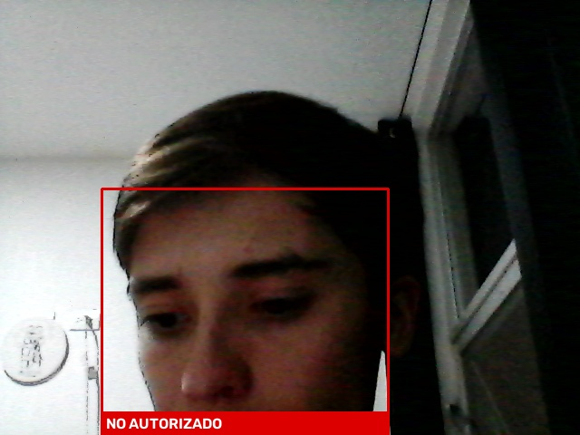

DOCUMENTO TÉCNICO DEL PROYECTO
Modalidad: aplicación de escritorio multiplataforma con interfaz gráfica
Contenido: fundamentos, diseño, implementación, resultados y recursos del sistema
Noviembre de 2026
El control de acceso es una de las aplicaciones más extendidas de la biometría. A diferencia de las credenciales tradicionales —contraseñas, tarjetas o llaves—, las características biométricas no pueden olvidarse, perderse ni transferirse con facilidad. Entre ellas, el rostro destaca por ser no invasivo, observable a distancia y aceptado socialmente, lo que ha permitido su adopción en teléfonos, aeropuertos, oficinas y sistemas de vigilancia.
Este trabajo presenta el desarrollo de una aplicación de escritorio que verifica en tiempo real si una persona tiene autorización para acceder, empleando reconocimiento facial sobre el video de una cámara web. La interfaz indica de manera explícita el resultado —AUTORIZADO o NO AUTORIZADO— y ofrece un panel protegido para dar de alta y de baja a las personas. Además, cada intento se conserva en un registro local con fecha, hora, identidad estimada y distancia de coincidencia.
El sistema se ejecuta íntegramente en la computadora del usuario: no existe envío de imágenes ni de datos a servicios externos. Las firmas faciales y las fotografías de referencia se almacenan en archivos locales, y la ruta de acceso se protege con una contraseña almacenada como hash.
Diseñar e implementar un sistema de autenticación biométrica facial con interfaz gráfica, capaz de indicar en tiempo real el estado de autorización de una persona y de administrar el acceso de los usuarios desde un panel seguro, funcionando en distintos entornos operativos.
El alcance comprende el desarrollo de la aplicación de escritorio, la administración local de las personas autorizadas y el registro de intentos. No se incluyen autenticación en red, bases de datos remotas, detección de vida (anti-spoofing) ni integración con dispositivos de control físico.
Tras esta introducción se presentan los fundamentos teóricos y los antecedentes históricos. Se describe después la metodología de diseño, la implementación de cada componente y los resultados obtenidos. Se cierra con el análisis, las conclusiones, las referencias y los enlaces a los recursos del proyecto.
La biometría es la identificación de personas a partir de rasgos fisiológicos o conductivos medibles. Un sistema biométrico opera en dos fases: inscripción (registro de la característica de referencia) y verificación o identificación (comparación de una nueva muestra contra la referencia). En este proyecto se realiza verificación uno a uno contra un conjunto de firmas almacenadas: para cada rostro detectado se calcula la distancia a todas las firmas conocidas y se acepta la identidad de la menor distancia siempre que no supere un umbral.
La detección localiza la posición de los rostros dentro de una imagen, devolviendo normalmente un rectángulo delimitador. El reconocimiento determina de quién se trata. El sistema resuelve ambos en secuencia: primero detecta y después extrae la firma de la región detectada. Separar las etapas permite dibujar el recuadro incluso cuando no existe ninguna persona registrada.
Una red convolucional transforma una imagen de rostro alineada en un vector de 128 valores reales, denominado embedding o firma facial. Rostros de la misma persona producen vectores cercanos en ese espacio, mientras que rostros distintos tienden a separarse. La similitud se mide con la distancia euclidiana (L2) entre vectores: a menor distancia, mayor similitud. Se define un umbral de decisión (tolerancia) de 0.55 por defecto, ajustable según el entorno.
El detector HOG (Histograma de Gradientes Orientados) es un descriptor clásico, rápido y de bajo consumo, pero sensible a cambios de pose, inclinación e iluminación. El detector basado en red convolucional (CNN) es más costoso computacionalmente, pero significativamente más robusto. En las pruebas preliminares de este proyecto, HOG no detectó un rostro inclinado y parcialmente sombreado en ninguna escala evaluada, mientras que CNN lo detectó correctamente. Por ello se adoptó CNN como modelo principal, con HOG como mecanismo de respaldo si el modelo no está disponible.
La captura de video, el análisis de imágenes y el dibujo de la interfaz son tareas con tiempos muy distintos. Si se ejecutaran en un único hilo, la detección bloquearía la ventana y la aplicación parecería congelada. Se emplea por tanto un modelo de tres hilos: un hilo productor que lee la cámara, un hilo consumidor que analiza los frames y el hilo principal de Tkinter que solo presenta el último resultado. El acceso al frame compartido se protege con un mecanismo de exclusión mutua.
Las firmas se serializan en un archivo local y las imágenes de referencia se guardan en una carpeta dedicada. Esta decisión simplifica el respaldo y el traslado del sistema entre equipos. Como contrapartida, la seguridad depende del control físico y de permisos del sistema operativo sobre esos archivos, por lo que se recomienda no versionarlos y restringir su acceso.
El reconocimiento facial tiene sus raíces en la antropometría criminalística del siglo XIX. Con el tiempo, las técnicas manuales dieron paso a métodos automáticos y, finalmente, al aprendizaje profundo. La tabla siguiente resume los hitos más relevantes para este proyecto.
| Época | Hito | Aporte |
|---|---|---|
| Década de 1880 | Sistema antropométrico de Bertillon | Primera codificación sistemática de rasgos corporales para identificación. |
| Inicio del siglo XX | Huellas dactilares | Consolidación de la biometría como herramienta de identificación policial. |
| Década de 1970 | Trabajos pioneros de Kanade | Primeros algoritmos automáticos de localización de rasgos faciales. |
| 1991 | Eigenfaces (Turk y Pentland) | Reducción dimensional mediante análisis de componentes principales. |
| 2001 | Detector Viola–Jones | Detección de rostros en tiempo real mediante cascadas de clasificadores. |
| 2009 | Biblioteca dlib | Conjunto de herramientas de visión por computadora y aprendizaje automático. |
| 2012 | Auge del aprendizaje profundo | Mejora sustancial de precisión gracias a redes convolucionales y grandes datos. |
| 2015 | FaceNet | Popularización de los embeddings faciales y la distancia L2 para comparación. |
| 2017 | Biblioteca face_recognition | API sencilla que integra detección, alineamiento y firmas faciales en Python. |
| Actualidad | Aplicaciones de escritorio accesibles | Posibilidad de construir sistemas biométricos locales con hardware modesto. |
La evolución descrita explica las decisiones técnicas del presente trabajo: se aprovechan bibliotecas maduras que encapsulan modelos complejos, de modo que el esfuerzo se centre en el diseño del sistema, la experiencia de usuario y la robustez de la verificación, sin reimplementar detectores ni redes neuronales.
Se trata de una investigación aplicada de carácter descriptivo-explicativo, orientada a la construcción de un artefacto funcional. El proceso se desarrolló en forma incremental: primero se definieron los requisitos, después se construyó un prototipo mínimo de detección, se incorporaron la persistencia y la interfaz, y finalmente se añadieron el panel administrativo y el registro de accesos. Cada incremento se verificó mediante ejecución real y pruebas automatizadas.
| ID | Requisito | Tipo |
|---|---|---|
| RF1 | Mostrar el video de la cámara en la interfaz gráfica. | Funcional |
| RF2 | Detectar rostros y señalar si la persona está autorizada. | Funcional |
| RF3 | Permitir dar de alta personas mediante captura de imágenes. | Funcional |
| RF4 | Permitir dar de baja personas y revocar su acceso. | Funcional |
| RF5 | Registrar cada intento de acceso con fecha, hora y resultado. | Funcional |
| RF6 | Proteger el panel administrativo con contraseña. | Funcional |
| RNF1 | Funcionar en Windows, Linux y macOS sin rutas absolutas. | No funcional |
| RNF2 | Mantener la interfaz fluida durante el análisis de video. | No funcional |
| RNF3 | Guardar los datos localmente, sin servicios externos. | No funcional |
| RNF4 | Liberar correctamente la cámara al cerrar o al capturar fotos. | No funcional |
El sistema se organiza en capas independientes. La capa de captura obtiene los frames; la capa de procesamiento detecta, compara y anota; la capa de persistencia administra firmas, fotografías y registro; y la capa de presentación contiene la pantalla principal y el panel de gestión. La configuración es un componente transversal consultado por todas las capas. Esta separación facilita la sustitución de cualquier módulo sin afectar a los demás.

Figura 1. Arquitectura general del sistema y relación entre sus componentes.
Como se observa en la Figura 1, la cámara alimenta al capturador en hilo, que entrega los frames al procesador. El reconocedor consulta las firmas almacenadas y produce el resultado anotado que muestra la interfaz. Paralelamente, el panel de gestión modifica el almacenamiento y provoca la recarga del reconocedor, mientras que el procesador escribe los eventos en el registro de accesos.
| Herramienta | Función en el proyecto |
|---|---|
| Python 3.12 | Lenguaje de implementación. |
| face_recognition y dlib | Detección de rostros, firmas faciales y comparación. |
| OpenCV | Adquisición de video, manejo de frames y anotaciones. |
| Tkinter / ttk | Interfaz gráfica multiplataforma. |
| NumPy y Pillow | Operaciones con arreglos y conversión de imágenes. |
| Git y GitHub | Control de versiones y publicación del proyecto. |
El siguiente pseudocódigo resume la lógica aplicada a cada frame analizado. Se muestra de forma independiente del lenguaje de programación para facilitar su comprensión.
ALGORITMO VerificarAcceso ENTRADA: frame proveniente de la cámara SALIDA: frame anotado, lista de estados 1 copia ← copia del frame 2 reducido ← reducir frame al 25 % de su tamaño 3 RGB ← convertir reducido a espacio de color RGB 4 rostros ← detectar rostros con modelo CNN sobre RGB 5 SI rostros está vacío ENTONCES 6 RETORNAR copia, lista vacía 7 FIN SI 8 PARA CADA rostro EN rostros HACER 9 coordenadas ← escalar el rectángulo al tamaño original 10 firma ← calcular firma facial sobre el frame completo en coordenadas 11 SI existen firmas registradas ENTONCES 12 distancias ← distancia de firma contra cada firma registrada 13 mejor ← índice de la menor distancia 14 autorizado ← (distancia[mejor] ≤ TOLERANCIA) 15 nombre ← nombre registrado[mejor] SI autorizado, "Desconocido" EN OTRO CASO 16 SINO 17 autorizado ← FALSO; nombre ← "Desconocido" 18 FIN SI 19 dibujar rectángulo verde si autorizado, rojo en caso contrario 20 dibujar etiqueta con nombre o "NO AUTORIZADO" 21 añadir estado a la lista 22 FIN PARA 23 RETORNAR copia, lista de estados
| Módulo | Responsabilidad principal |
|---|---|
| config | Rutas relativas, parámetros de cámara, tolerancia, modelo de detección y hash de la contraseña. |
| almacenamiento | Cargar, guardar y eliminar firmas y fotografías de referencia. |
| reconocedor | Detectar rostros, calcular firmas, comparar y anotar el frame. |
| camara | Abrir el dispositivo con reintentos y mantener el último frame en un hilo. |
| procesador | Consumir frames, ejecutar el reconocimiento y registrar cambios de estado. |
| registro | Escribir y leer el archivo de historial de accesos. |
| app_principal | Ventana principal, visualización de video e indicador de estado. |
| panel_personas | Control de contraseña, altas, bajas y visor de registro. |
La Figura 2 detalla el ciclo ejecutado por el hilo de análisis. El proceso comienza con la lectura del último frame disponible y solo realiza la detección sobre una versión reducida de la imagen, lo que disminuye el costo computacional. Las coordenadas obtenidas se reescalan antes de calcular la firma sobre la imagen completa, preservando precisión. Las ramas negativas de las decisiones conducen a esperar un nuevo frame o a mostrar el estado correspondiente, según el caso.

Figura 2. Diagrama de flujo del proceso de verificación en vivo y de escritura en el registro.
La Figura 3 describe las operaciones disponibles en el panel. El acceso se condiciona a la verificación de la contraseña. Una vez dentro, las opciones de alta y baja modifican el almacenamiento y fuerzan la recarga de las firmas en memoria, de modo que el cambio surte efecto sin reiniciar la aplicación. La opción de registro es de solo lectura.

Figura 3. Flujo del panel de gestión: autenticación, altas, bajas y consulta del registro.
| Requisito | Resultado observado |
|---|---|
| RF1 — Video en vivo | Cumplido. La imagen se actualiza continuamente sin congelar la ventana. |
| RF2 — Detección y estado | Cumplido. Recuadro rojo para rostros no reconocidos y verde con nombre para autorizados. |
| RF3 — Altas | Cumplido. Captura de cinco muestras, guardado de firma y fotografía. |
| RF4 — Bajas | Cumplido. Eliminación de firmas y foto, con efecto inmediato. |
| RF5 — Registro | Cumplido. Eventos con fecha, hora, identidad y distancia; Anti-repetición de 3 segundos. |
| RF6 — Contraseña | Cumplido. Acceso denegado con valor incorrecto y hash almacenado. |
| RNF1 a RNF4 | Cumplidos en el entorno de prueba (Linux); el diseño prevé el comportamiento en los demás sistemas. |
La Figura 4 muestra un frame real capturado durante las pruebas y procesado por el sistema. Se aprecia el rectángulo delimitador del rostro y la etiqueta NO AUTORIZADO, resultado esperado cuando la persona no se encuentra registrada o cuando aún no existen firmas en el sistema. Esta imagen confirma que la detección y el dibujo de anotaciones funcionan incluso antes de realizar el primer alta.

Figura 4. Frame procesado: recuadro rojo y etiqueta de no autorización sobre un rostro detectado.
Se cronometró la detección sobre una imagen de 640 × 480 píxeles con un rostro inclinado y parcialmente sombreado. Los resultados justifican la selección del modelo CNN a escala reducida.
| Modelo | Escala del frame | Rostros detectados | Tiempo aproximado |
|---|---|---|---|
| HOG | 25 % | 0 | 0.008 s |
| HOG | 50 % | 0 | 0.019 s |
| HOG | 100 % | 0 | 0.037 s |
| CNN | 25 % | 1 | 0.076 s |
| CNN | 50 % | 1 | 0.235 s |
| CNN | 100 % | 1 | 4.090 s |
El modelo HOG falló en todas las escalas probadas, mientras que CNN detectó el rostro en todas ellas. La configuración adoptada —CNN sobre un frame al 25 %— ofrece el mejor equilibrio: detección correcta con un costo temporal compatible con la interacción en tiempo real.
Los resultados confirman que la arquitectura propuesta cumple los objetivos planteados. La separación entre captura, análisis y presentación permitió mantener una interfaz fluida incluso cuando la detección requiere varias decenas de milisegundos. La adopción del modelo CNN resolvió la limitación observada con HOG en condiciones adversas de iluminación y pose, sin comprometer la fluidez gracias a la reducción previa del frame.
Un aspecto relevante es el dibujo del recuadro aun cuando no existen firmas registradas.Este comportamiento hace que el sistema sea comprensible desde el primer uso: el usuario observa que el rostro está siendo detectado y que el acceso se deniega por falta de autorización, en lugar de percibir una cámara inactiva.
Frente a sistemas que emplean servicios de reconocimiento en la nube, esta solución privilegia la privacidad y el funcionamiento sin conexión. Frente a implementaciones que usan detectores clásicos, la elección de CNN mejora la tasa de detección en escenas difíciles. Respecto a las soluciones que requieren bases de datos externas, el almacenamiento en archivos reduce la complejidad de instalación, aunque limita la escalabilidad a un único equipo.
Se diseñó e implementó un sistema de control de acceso biométrico facial que cumple con los requisitos funcionales y no funcionales definidos. La aplicación muestra el video en vivo, identifica visualmente el estado de autorización, administra altas y bajas mediante un panel protegido y conserva un registro de los intentos de acceso.
La experiencia de desarrollo evidenció que la elección del modelo de detección incide de forma decisiva en la utilidad percibida: un detector rápido pero incapaz de encontrar el rostro produce una interfaz que parece no funcionar. La combinación de CNN a escala reducida, procesamiento en segundo plano y anotación permanente de los rostros detectados resolvió ese problema.
Como trabajo futuro se plantea incorporar detección de vida para impedir suplantaciones, cifrar el almacenamiento biométrico, añadir varios niveles de usuario con permisos diferenciados, generar estadísticas a partir del registro de accesos y adaptar la interfaz a dispositivos móviles o pantallas táctiles.
Todos los recursos desarrollados se encuentran en el repositorio público del proyecto. La liga principal es la siguiente:
https://github.com/Ripinvenus/Facial-recognition
A continuación se indican las ubicaciones específicas de cada recurso solicitado:
| Recurso | Descripción | Liga |
|---|---|---|
| A. Reporte técnico | El presente documento, en formato PDF. | Reporte Tecnico.pdf (archivo local del proyecto) |
| B. Código fuente | Todos los programas desarrollados y comentados: módulos de lógica, interfaz y configuración. | https://github.com/Ripinvenus/Facial-recognition/tree/main/src .../blob/main/main.py .../blob/main/config.py |
| C. Ejecutable e instrucciones de uso | Punto de entrada main.py, ejecutable con Python dentro del entorno virtual; instrucciones de instalación y operación. | https://github.com/Ripinvenus/Facial-recognition/blob/main/main.py .../blob/main/README.md |
| D. Datos e imágenes | Carpeta de datos: fotografías de referencia, firmas faciales y registro de accesos. | https://github.com/Ripinvenus/Facial-recognition/tree/main/data |
| E. Manual de usuario | Guía breve de operación: instalación, pantalla principal, altas, bajas, registro y solución de problemas. | https://github.com/Ripinvenus/Facial-recognition/blob/main/Manual%20de%20usuario.md |
Nota sobre el ejecutable: el proyecto se distribuye como aplicación Python. Para ejecutarlo, crear el entorno virtual, instalar las dependencias listadas en requirements.txt y ejecutar main.py. No se requiere un instalador independiente. Las instrucciones completas están en el README y en el Manual de usuario.
Fin del reporte técnico